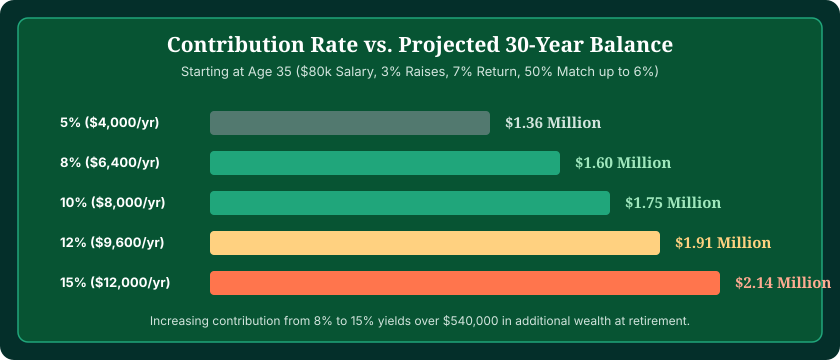
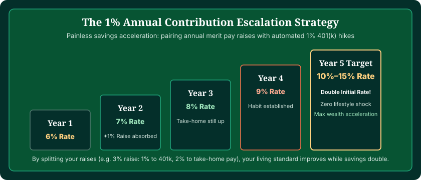

When deciding how much should I contribute to my 401(k), the golden rule of retirement planning is straightforward: always contribute at least enough to capture 100% of your employer's match, and strive for a total retirement savings rate of 10% to 15% of your gross pay. Because every budget, current balance, and timeline is unique, you can test different percentage rates and match formulas with our interactive 401(k) Calculator.
Many employees default to whatever percentage is set during new-hire orientation—frequently 3% or 4%. While automated enrollment gets you started, remaining at 3% throughout your career leaves you vulnerable to a significant savings shortfall when you retire. Conversely, attempting to contribute 20% immediately when you have high-interest debt or no emergency fund can cause unnecessary financial stress.
This comprehensive guide establishes a clear hierarchy of 401(k) contributions, compares the long-term wealth created by 5%, 10%, and 15% savings rates, explains age-based benchmarks, and provides actionable steps to safely scale your contributions over time.
Calculate Your Custom Contribution Strategy
Compare how moving from 6% to 10% or 15% alters your total nest egg across 10, 20, and 30 years. Model your numbers with our verified engine.
Open 401(k) Calculator →The Three-Tier Hierarchy of 401(k) Contributions
Instead of viewing your contribution rate as an all-or-nothing choice, financial planners recommend organizing your savings strategy into three distinct tiers:
The 401(k) Contribution Hierarchy
Tier 1: The Match Level (Non-Negotiable Minimum)
Contribute the exact percentage required to capture every dollar of your company's employer match (typically 4% to 6%). This delivers an immediate 50% to 100% guaranteed return on your money.
Tier 2: The Core Target (10% to 15% Total Rate)
Combine your employee contributions with your employer match to achieve a 10% to 15% total annual savings rate. This is the institutional baseline needed to replace 75% to 80% of income in retirement.
Tier 3: The Wealth Accelerator (15% to Max Limit)
Scale up to the annual IRS elective deferral limit ($23,000 for 2024 / $23,500 for 2025, plus $7,500 catch-up if age 50+) to aggressively reduce taxable income and build multi-generational or early retirement wealth.

5% vs. 10% vs. 15%: How Contribution Rates Impact Your Final Wealth
To see the dramatic long-term power of small percentage increases, let's analyze a 30-year-old employee earning $70,000 per year with a 3% employer match, projecting growth over 30 years at a 7% average annual return:
| Personal Contribution | Employer Match (3%) | Total Annual Savings | Monthly Paycheck Impact | Projected Balance at Age 60 (30 Yrs) |
|---|---|---|---|---|
| 5% ($3,500/yr) | 3% ($2,100/yr) | $5,600/yr (8% total) | ~$220/month | $565,990 |
| 10% ($7,000/yr) | 3% ($2,100/yr) | $9,100/yr (13% total) | ~$440/month | $919,740 |
| 15% ($10,500/yr) | 3% ($2,100/yr) | $12,600/yr (18% total) | ~$660/month | $1,273,480 |
Increasing your contribution rate from 5% to 15% requires an additional pre-tax outlay of roughly $440 per month. But over 30 years, that single adjustment produces over $707,000 in additional retirement wealth! That is the astonishing leverage of compounding at work.
How Much to Contribute Based on Your Age
Because compound interest requires time to multiply, your optimal contribution rate evolves depending on which stage of your career you are in:
In Your 20s: 10% to 12% Total
When you are in your twenties, time is your greatest financial superpower. A single dollar saved at age 22 can multiply 15 to 20 times over by retirement. If entry-level salaries and student loans make 15% impossible, start by capturing your full employer match (e.g., 5%), and use auto-escalation to add 1% each year.
In Your 30s: 12% to 15% Total
In your thirties, career earnings typically accelerate. Your goal should be achieving a full 15% total retirement savings rate (employee + employer match). If you have home equity or growing family expenses, automating this deduction ensures your retirement savings are prioritized before lifestyle inflation sets in.
In Your 40s: 15% to 18% Total
During your forties, you enter your peak earning years. If you started late or carry a lower balance than the age 40 benchmark (3x salary), this is the decade to step up your contributions beyond 15% to close the gap.
In Your 50s and 60s: 15% to Maxing Out (Plus Catch-Ups)
Once you reach age 50, the IRS permits annual catch-up contributions ($7,500 extra per year). If children have left college or major debts have been retired, directing those freed-up cash flows into your 401(k) allows you to make massive progress in your final decade before retirement.

Traditional vs. Roth 401(k): Where Should Your Contributions Go?
Many workplace plans now offer both a Traditional 401(k) and a Roth 401(k). Choosing the right bucket affects your tax bill both today and in retirement:
- Traditional 401(k): Contributions are deducted pre-tax, reducing your adjusted gross income (AGI) and income taxes today. Withdrawals in retirement are taxed as ordinary income. Best for: Savers currently in high tax brackets who expect to be in lower brackets in retirement.
- Roth 401(k): Contributions are made with after-tax dollars today, providing zero immediate tax break. However, all future investment earnings and qualified withdrawals in retirement are 100% tax-free. Best for: Younger savers in lower tax brackets or those seeking tax diversification in retirement.
Note that under recent SECURE 2.0 legislation, employer matching contributions can now also be designated as Roth matching if your plan allows, though traditional matching remains the standard.
Should You Max Out Your 401(k)?
Maxing out your 401(k) by reaching the IRS limit ($23,000 / $23,500) is a phenomenal financial goal, but it is not the right move for everyone in every situation:
- First, eliminate high-interest debt: Paying off credit card debt carrying 22% interest delivers an immediate, risk-free 22% return. Never contribute more than the employer match until high-interest consumer debt is eliminated.
- Build a 3-to-6 month emergency fund: 401(k) withdrawals before age 59½ face strict IRS rules and a 10% early withdrawal penalty. Having liquid emergency savings prevents you from ever needing to borrow or withdraw from your retirement account.
- Consider an HSA (Health Savings Account): If you are enrolled in a high-deductible health plan (HDHP), an HSA offers a triple-tax advantage that is even more tax-efficient than a 401(k).
Frequently Asked Questions
How much should I contribute to my 401(k)?
At a minimum, you should always contribute enough to secure 100% of your company's employer match (typically 4% to 6%). Most financial planners recommend aiming for a total savings rate between 10% and 15% of your gross salary (including employer match) for a comfortable retirement.
Is 10% a good 401(k) contribution?
Yes, 10% is a solid foundation. If your employer provides a 3% or 4% match on top of your 10%, your total retirement savings rate reaches 13% to 14%, which is very close to the standard 15% institutional target.
Is 15% too much to contribute to a 401(k)?
No. Saving 15% is the benchmark recommended by institutional retirement researchers (such as Fidelity and Vanguard) for savers who start in their mid-to-late 20s and wish to retire in their mid-60s with 75% to 80% income replacement.
Should I increase my 401(k) contribution every year?
Yes. Enrolling in automatic annual escalation (raising your contribution by 1% each year when you receive an annual salary increase) is one of the easiest ways to move from a 6% starter rate to a 15% target without feeling any reduction in your take-home pay.
Should I max out my 401(k)?
Maxing out your 401(k) up to the IRS elective deferral limit ($23,000 for 2024 / $23,500 for 2025) is an excellent wealth-building move if you have high earnings, have already funded an emergency reserve, and have no high-interest credit card debt. However, it is not mandatory for a secure retirement.
What if I can't afford to contribute 15% right now?
Start by contributing just enough to capture your full employer match (e.g., 5%). If money is extremely tight, start at 2% or 3% to build the automated habit, and increase it by 1% every 6 to 12 months as your cash flow improves.